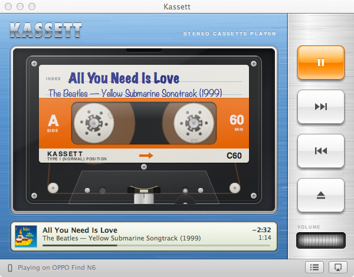
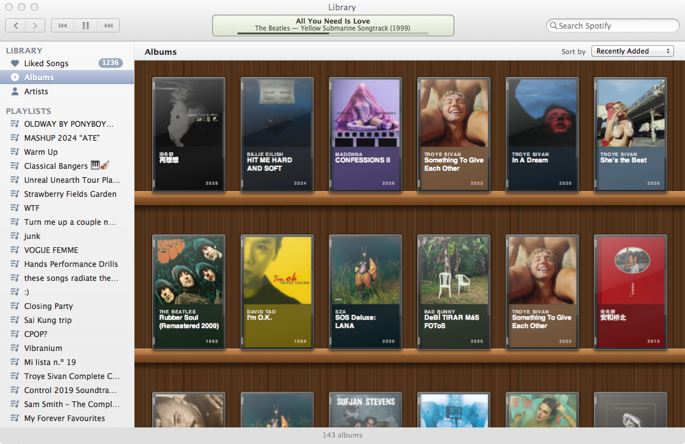
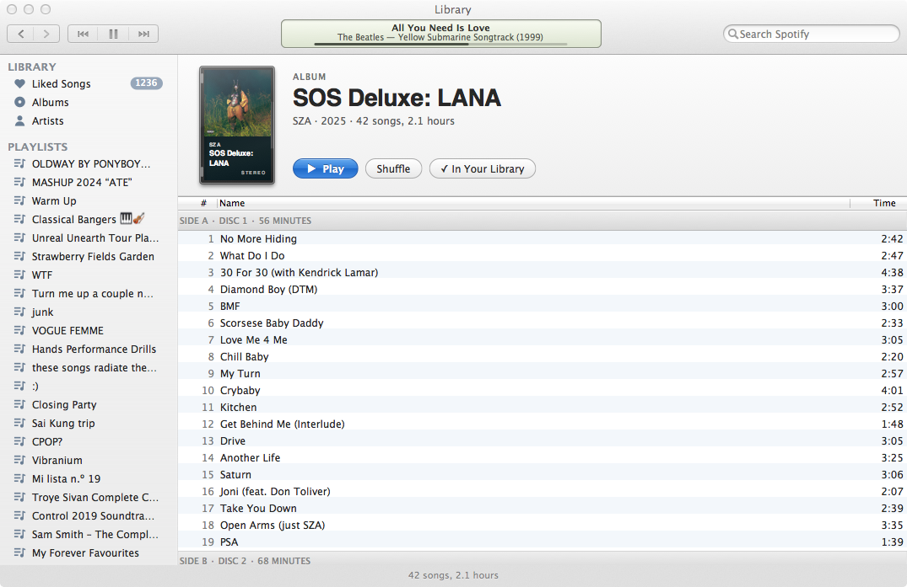
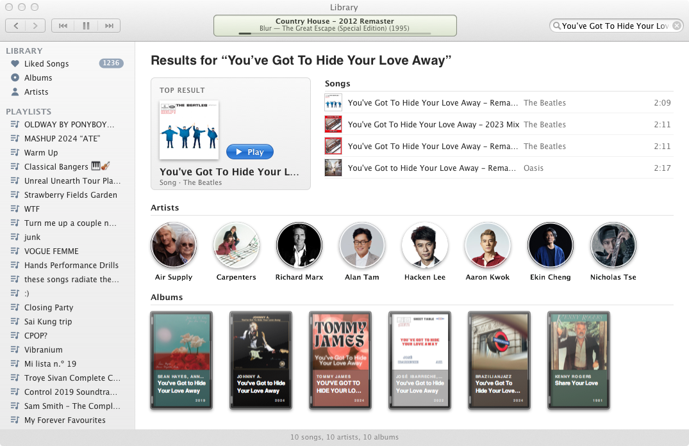
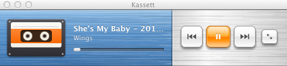

Kassett
By XGZepto · A remote for Spotify, drawn as a cassette deck.
Screenshots





Description
Kassett is a remote for Spotify. The music keeps playing on your phone, speakers or TV, and Kassett shows it as a cassette turning in a tape deck.
The Library key opens your Liked Songs, albums, artists and playlists in a window modelled on iTunes 10, with search and an Up Next list. A small player is there for when the deck takes up too much room.
The name is Swedish for cassette, because Spotify started in Stockholm. 📼
You need Spotify Premium. Spotify lets only 25 accounts use an app like this until Spotify approves it, so if Kassett can't log you in, it explains how to use your own free Spotify developer app instead.
What's New in Version 0.5
- A cassette deck with turning reels, piano-key controls and a tape counter.
- A library browser for Liked Songs, albums, artists, playlists and search.
- Up Next, and Add to Up Next from any list.
- A mini player.
- If your account isn't on Spotify's list, you can log in with your own Spotify app.